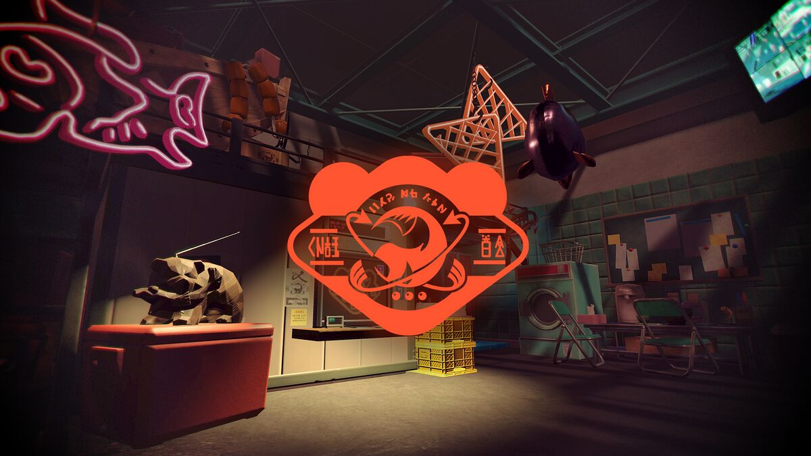
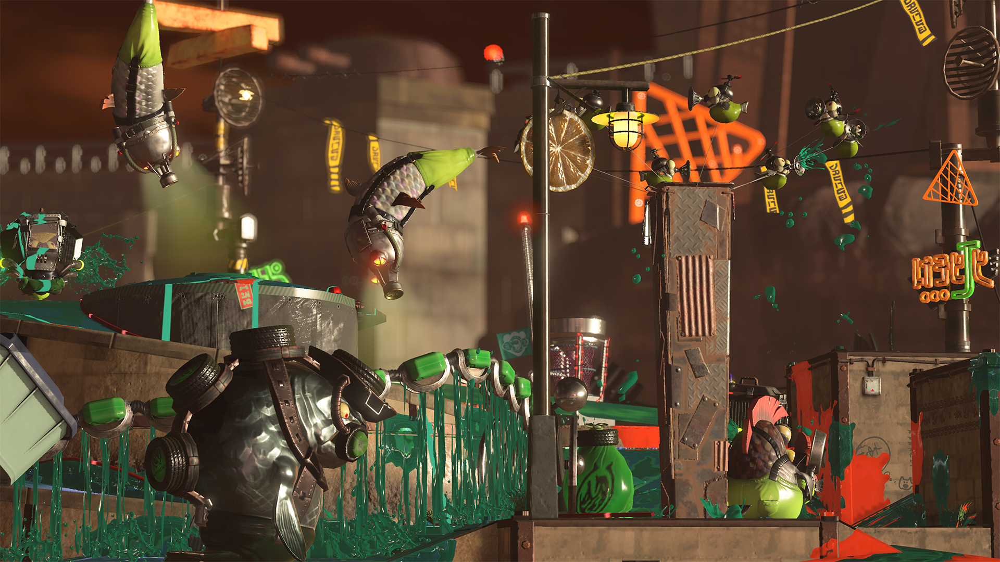
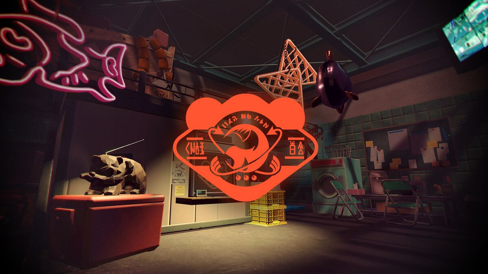
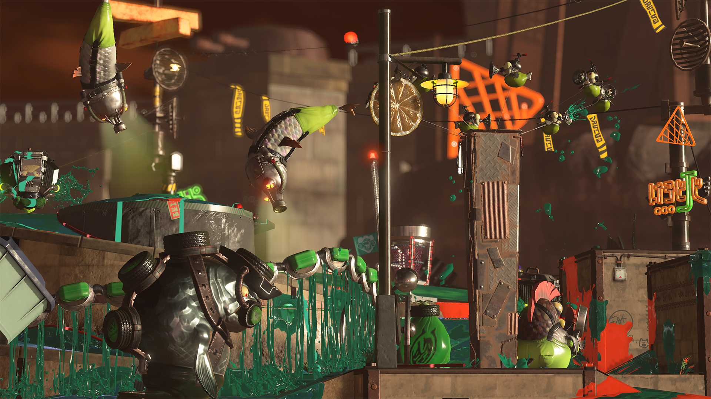
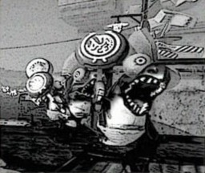

2.3.0 OTROS FENÓMENOS OBSERVADOS
El modo Salmon Run - Next Wave no solo se trata de enfrentarse a hordas de enemigos
llamados Salmónidos, sino que también presenta una serie de fenómenos y eventos especiales que
añaden un giro único a la jugabilidad. Estos fenómenos cambiantes, como las Mareas Alta, Media y
Baja,
la Niebla, las Tormentas, entre otros, así como eventos especiales ocasionales, desafían a
los jugadores a adaptarse y colaborar de maneras nuevas y emocionantes. En esta dinámica
experiencia cooperativa, cada partida se convierte en un emocionante rompecabezas que requiere
estrategia y comunicación para superar los desafíos en constante cambio. A continuación,
exploraremos algunos de los fenómenos observados en Salmon Run - Next Wave y cómo influyen en la
jugabilidad.


2.3.1 Mareas (altas y bajas)
-
Marea baja
- Cuando baja la marea, gran parte del territorio queda al descubierto.
- Los guerreros salmónidos utilizan estas zonas como campo base desde el que lanzan ataques coordinados.
- Durante la marea baja, la nasa pesquera se encuentra cerca de estas zonas.
-
Marea alta
- Cuando sube la marea, el terreno de combate se ve reducido.
- La nasa pesquera se encontrará en el lugar habitual.
-
Consejos de Don Oso
- Durante la marea baja, tienes que moverte inmediatamente hasta las zonas que el mar deja al descubierto.
- Durante la marea alta, ¡debes sobrevivir a la arremetida salmónida, cueste lo que cueste!
-
Información adicional
- Los cambios repentinos e impredecibles en el nivel de las aguas suponen un fenómeno poco común que solo se da en lugares donde abundan los salmónidos.
- Todavía se desconocen las causas y siguen siendo objeto de estudio en ámbitos académicos.
2.3.2 Frenesies

-
Descripción
- Nutridos grupos de feroces salmónidos aparecen y atacan con extrema rapidez.
- Estos rabiosos salmónidos aparecen atraídos por los refulgectos.
-
Cómo obtener huevecillos dorados
- Acaba con el orónido que se oculta en el banco de salmónidos.
-
Consejos de Don Oso
- Defiende el territorio junto con tus compañeros, ¡y céntrense en aniquilar a los salmónidos que aparezcan!
- Presten atención a los refulgectos: si escuchan un zumbido alrededor, lo más probable es que una horda de enemigos ande cerca.
-
Información adicional
- Se cree que la mayor agresividad de los salmónidos guarda cierta relación con las alteraciones gravitacionales que se deben a la trayectoria celeste del planeta, aunque no se ha podido constatar tal afirmación.
- Algunos estudios afirman que en tiempos pretéritos a la Era Calamarieval, antes de que se contase con medidas defensivas como los ataques de largo alcance, numerosas ciudades sucumbieron tras violentos frenesies salmónidos.


2.3.3 Niebla
-
Descripción
- Una niebla densa invade el terreno y reduce la visibilidad de forma drástica.
- Los enemigos se aprovecharán de este fenómeno para atacar desde cualquier dirección.
-
Cómo obtener huevecillos dorados
- Vence a los grandes salmónidos.
- Cuando esté nublado, es posible que aparezcan orónidos, una subespecie muy poco común.
-
Consejos de Don Oso
- Procura no perder el contacto con tus compañeros en ningún momento.
- Es sumamente peligroso ir por la niebla sin apoyo.
-
Información adicional
- Los orónidos son una subespecie que no se ve con frecuencia: solo uno de cada 10 000 alevines acaba convirtiéndose en un orónido.
- Su esperanza de vida y su inteligencia son considerablemente superiores a las de otros salmónidos.

2.3.4 Brasaletas
-
Descripción
- Estos vehículos acorazados reaparecen constantemente, uno tras otro. En cuanto fijan un objetivo, lo persiguen sin descanso.
- A menudo las escamitas se sirven de ellos para desplazarse, por lo que pueden impedir que fijen un blanco.
-
Cómo obtener huevecillos dorados
- Si atacas al punto débil que tienen en la parte trasera, lograrás aturdirlos.
- Al aturdirlos, podrás detectar más puntos débiles. Ataca justo en ellos para reventar a las brasaletas y arrebatarles sus huevecillos dorados.
-
Consejos de Don Oso
- Si una brasaleta te marca como objetivo, lo mejor es que huyas y dejes que tus compañeros se ocupen de ella.
-
Información adicional
- Con los costos operativos de una única brasaleta podrían financiarse cien esbirros salmónidos.


2.3.5 Ataques de agallones
-
Descripción
- Los agallones atacan en gran número, procedentes de los bancos de arena que la marea deja al descubierto.
- Don Oso habilitará cañones para poder lidiar con estos enemigos.
-
Cómo obtener huevecillos dorados
- Es necesario vencer a los grandes salmónidos.
-
Consejos de Don Oso
- ¡Usa los cañones para despejar el camino para los demás empleados!
-
Información adicional
- Por lo que parece, en los cuarteles salmónidos se reservan salas aparte para que grandes grupos de agallones puedan entrenarse.
2.3.6 Detección de oronidos
-
Descripción
- Un gran número de surtidores aparecerán en la zona.
- Uno de ellos ocultará un orónido.
- Otros salmónidos atacarán desde la costa.
- Disparar a surtidores que no contienen ningún orónido los hará entrar en erupción, pero no saldrá nada de su interior.
-
Cómo obtener huevecillos dorados
- Para revelar al orónido, haz que erupcione el surtidor que lo esconde.
- Cuando dispares tinta al orónido que aceche en el surtidor, comenzará a soltar huevecillos dorados.
-
Consejos de Don Oso
- Sepárense, cubran el territorio y localicen al orónido cuanto antes.
- Cuando localices al orónido, avisa a tus compañeros de trabajo entintenlo sin piedad.
- Al disparar a un surtidor, emitirá una luz. Cuanto más brillante sea, más cerca andará el orónido.
-
Información adicional
- Los salmónidos consiguieron la tecnología necesaria para fabricar surtidores mediante intercambios comerciales con los octarianos.
- Los orónidos se mueven más rápido al recibir disparos de tinta.
2.3.7 La salmonodriza
-
Descripción
- La salmonodriza transporta tropas salmónidas al campe de batalla.
- Un gran número de salmocópteros transportan contenedores repletos de salmónidos menores procedentes de la salmonodriza.
- Cada cierto tiempo, la salmonodriza se acerca a la nasa pesquera y trata de recuperar los huevecillos dorados que contiene.
-
Cómo obtener huevecillos dorados
- Dispara a los contenedores que transportan los salmocópteros para hacer que exploten.
- Si logras reventar también a los salmocópteros, los despojarás de sus huevecillos dorados.
-
Consejos de Don Oso
- Sepárense y avancen por separado para reventar a los salmocópteros.
- Si la salmonodriza se dirige a la nasa pesquera, háganla retroceder cuanto antes.
-
Información adicional
- La salmonodriza es una pieza fundamental en la cadena de distribución salmónida.
- Se dice que se trata del último recurso de todo ejército salmónido. Cuando parte hacia el campo de batalla, todas las tropas situadas en los alrededores se reúnen para verla despegar.

2.3.8 Erupciones de bocalodos
-
Descripción
- Los bocalodos se asoman, abriendo su gran boca, per agujeros que dejan los surtidores.
- Salmónidos menores saltan de la boca abierta, uno tras otro tras otro.
-
Cómo obtener huevecillos dorados
- Lanza una bomba a la boca del bocalodo y, cuando esta estalle, le hará escupir un huevecillo dorado.
- Si le lanzas suficientes bombas, el bocalodo explotará y soltará aún más huevecillos dorados.
- Ocasionalmente, verás alguno cubierto de cierta viscosidad dorada. Si lo revientas, soltará montones de hueveciles durades.
-
Consejos de Don Oso
- Para encontrar a un bocalodo, sigue la pista a los salmónidos menores, a ver de dónde vienen.
- Los bocalodos se multiplican con el paso del tiempo, ¡así que no tardes en eliminarlos!
-
Información adicional
- En otros tiempos se creía que los bocalodos eran espíritus que habitaban en lo más profundo de los mares de la región de Tintelia.
- Hoy en día, gracias a los audaces jóvenes que tuvieron la idea de arrojar bombas en sus bocas, sabemos que son simples salmónidos atrapados en una tubería y cubiertos de lodo.
2.3.9 Tornados gigantes
-
Descripción
- El suelo se secará y un enorme tornado aparecerá sobre el mar.
- Este tornado lanzará hacia la orilla todo lo que esté en el agua, incluidos los salmónidos.
-
Cómo obtener huevecillos dorados
- Los tornados dejan también en tierra firme cajas repletas de huevecillos dorados.
- ¡Ábrelas para que salgan huevecillos dorados en grandes cantidades!
-
Consejos de Don Oso
- Los huevecillos pueden aterrizar muy lejos de la nasa, así que prueba a lanzarlos en coordinación con tus compañeros.
- Mientras transportas los huevecillos, esquiva a los salmónidos que se abalancen sobre ti o reviéntalos.
-
Información adicional
- No hay forma de predecir cuándo aparecerá un tornado gigante. Sacará muchas cosas del mar, lo que numerosas bajas entre los salmónidos.
- Los objetos fuera de control pueden provocar accidentes.
- Si no puedes acceder a la nasa en tierra firme debido a la subida del agua, cada huevecillo depositado en ella contará por dos.

Formulario de Opiniones sobre SALMON RUN - NEXT WAVE